Rapunzel is the protagonist of Disney's 2010 animated feature film Tangled. She is the princess of the kingdom of Corona, known for her long, magical, golden hair. As a child, Rapunzel was abducted by a wicked crone and locked away in a remote tower for eighteen years - during which, she became fascinated with a phenomenon involving "floating lights" that would only appear on her birthday. With the aid of the handsome thief, Flynn Rider, Rapunzel escaped her tower to learn more about the lights and pursue her dream of exploring the outside world.
Rapunzel is loosely based on the protagonist of the classic German fairy tale Rapunzel by the Brothers Grimm. She is the tenth official Disney Princess and is also the first to originate from a fully computer-animated film.
Here you can see the most beautiful memories of our beloved Rapunzel. How fond memories they are!
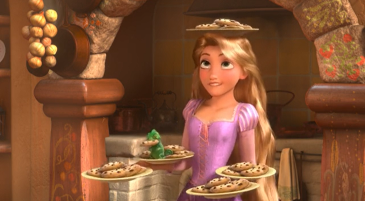
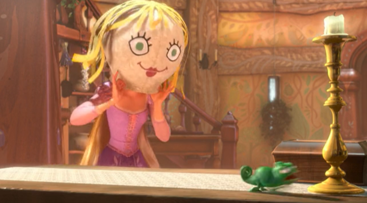
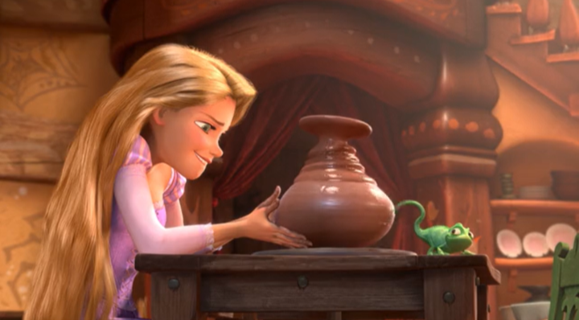
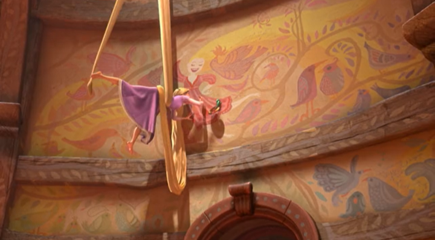
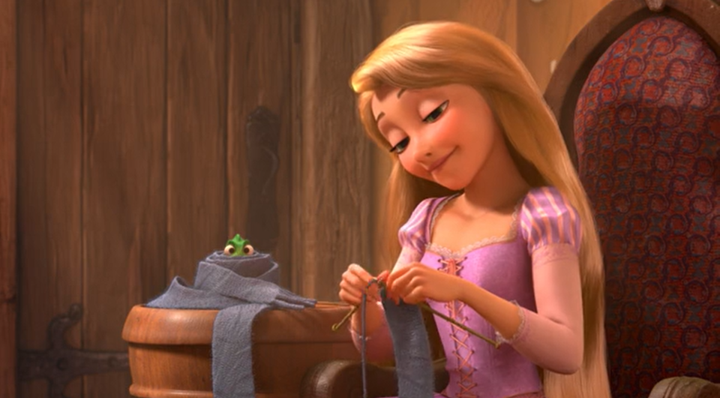
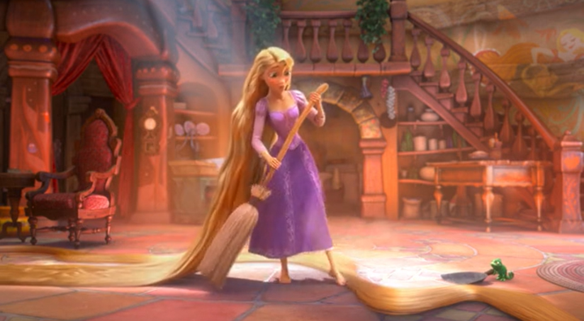
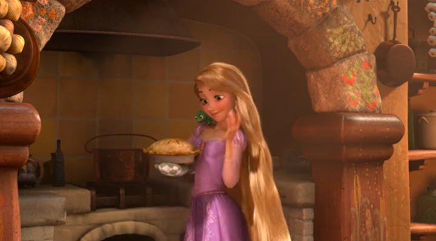
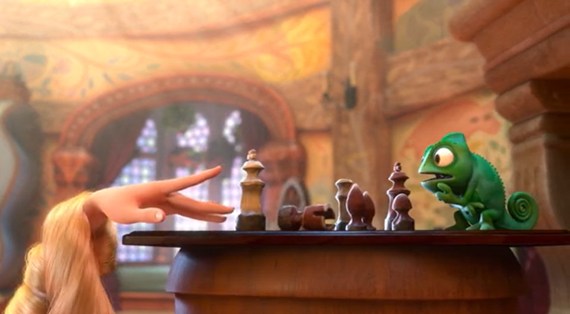
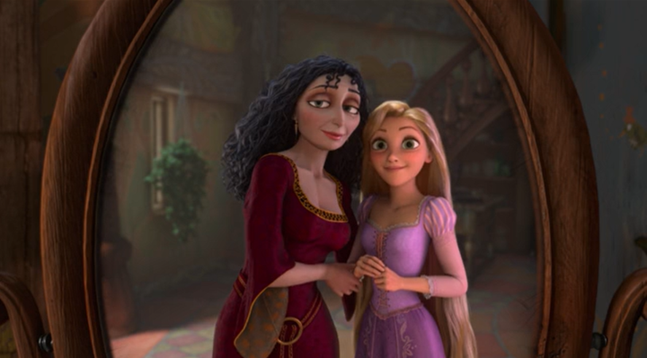
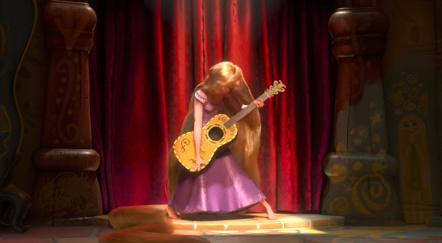
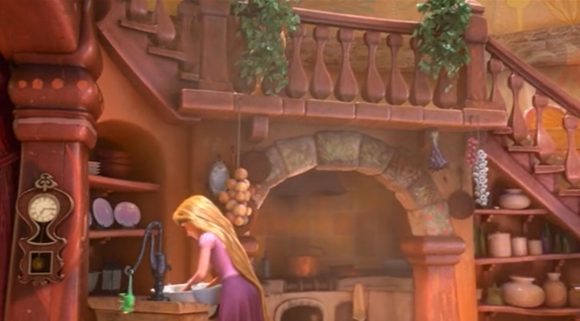
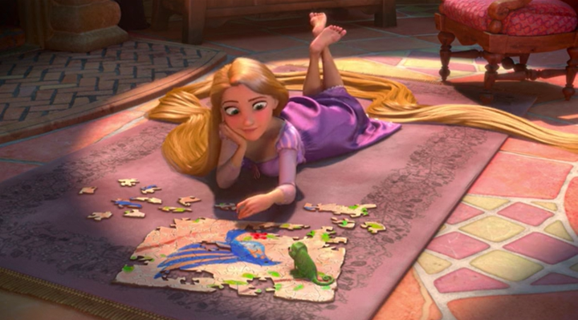
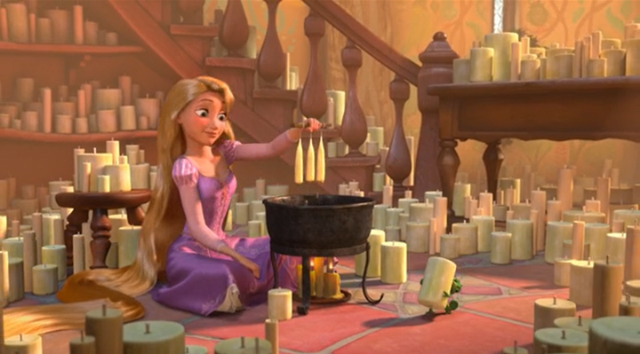
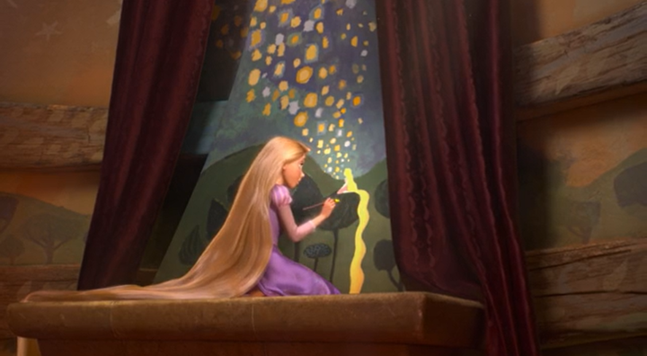
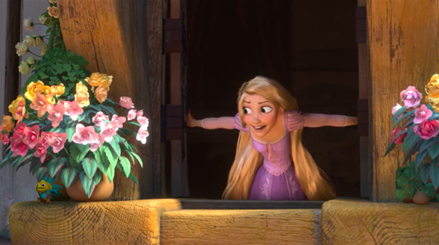
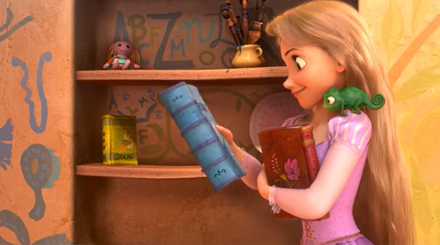
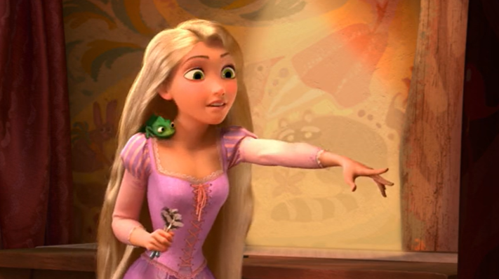
Wait… Something doesn't feel right. Do you know what it is? Give Rapunzel some advice!
Click on me if you are ready to continue!
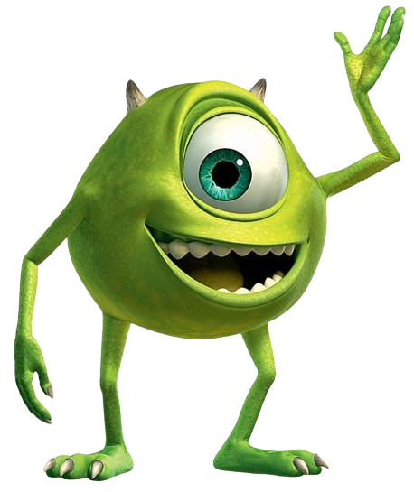